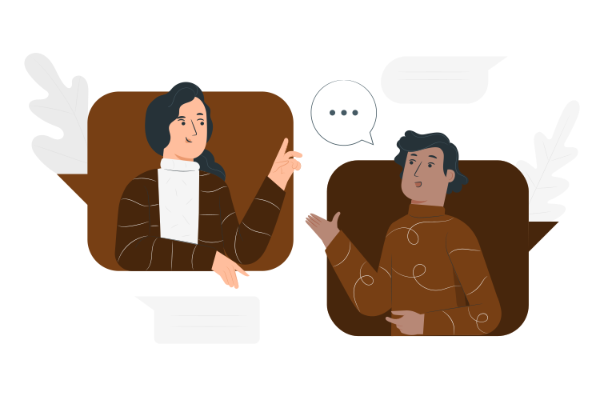

Anggah-ungguh
Anggah ungguh bahasa Bali merupakan tingkatan-tingkatan bahasa (sor singgih basa) yang ada di Bali, dimana masing-masing tingkatan memilki nilai rasa yang berbeda-beda dan digunakan sebagai media komunikasi disesuaikan dengan lawan berbicara sehingga menunjukan etika yang baik.

Ingin mengunduh materi? Klik disini